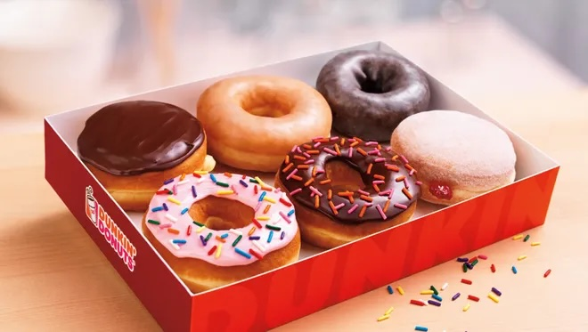

Explore this website to learn more about donuts and discover all you need to know about the popular pastry! There are so many different flavors and kinds! There's one for everyone's savoring taste buds (unless you have an allergy, sorry).

Do you ever wonder how the donut was made? Click here to see how the popular pastry came to be!